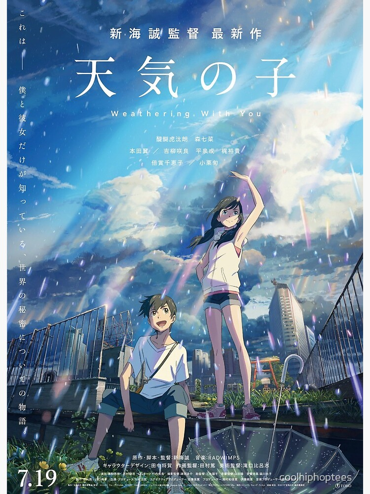

Weathering with you
Weathering with you is a 2019 Japanese animated romantic fantasy film written and directed by Makoto Shinkai. The story follows a 16 year old high school boy, Hodaka Morishima, who runs from his troubled rural home to Tokyo, and later he finds a girl named Hina Amano, an orphaned girl who takes care of her younger brother. Then she finds out that she has ability to control the weather and together with Makoto they start making money on it.
This is one of Makoto's famous works. Some other works that he is well known for are Children Who chase Lost Voices, Your Name and The Garden Of Words.
Trailer